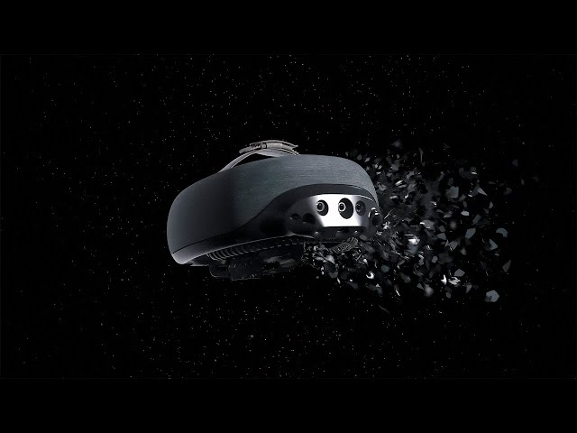

SuperBrain 1 transforma información del espacio en sensaciones táctiles sobre la frente. Es una forma diferente de comunicar lo que ocurre alrededor de una persona. Hace un año me salio en instagram un prototipo de este producto y me parecio una idea estupenda que si se realizaba, cambiaraia el mundo. Hoy puedo decir qeu esto es posible.
Fabricante: 7Sense · País: Estonia · Presentación pública: 2024

SuperBrain 1. Imagen de referencia del dispositivo.
¿Qué es SuperBrain 1?
SuperBrain 1 es un dispositivo de asistencia desarrollado por la empresa estonia 7Sense. Se coloca en la cabeza y utiliza cámaras y sensores para captar información de los objetos que rodean al usuario.
Lo innovador es cómo transmite esa información: en lugar de depender de una pantalla o de avisos de voz, el SuperBrain 1 genera patrones de contacto sobre la frente mediante una matriz de pequeños elementos táctiles. La persona debe aprender a interpretar esas sensaciones para reconocer el entorno. [1]
Importante: el dispositivo no devuelve la vista ni sustituye la visión biológica; proporciona una representación táctil del entorno.
Características principales
Entrada: cámaras 3D y otros sensores para captar datos espaciales.
Procesamiento: el sistema interpreta la posición, el movimiento y la distancia de elementos del entorno.
Salida: información convertida en presión o contacto táctil en la frente.
Uso: está pensado como complemento de otras ayudas de movilidad, como el bastón blanco.
La Interacción Persona-Ordenador estudia cómo se comunican las personas y los sistemas informáticos. SuperBrain 1 es interesante porque modifica el canal de comunicación: transforma datos del entorno en información que puede percibirse mediante el tacto.
Secuencia de funcionamiento
Captación: las cámaras y sensores recogen información del espacio.
Procesamiento: el software transforma esos datos en patrones táctiles.
Respuesta del dispositivo: una matriz de puntos transmite sensaciones a la frente.
Interpretación: la persona relaciona esas sensaciones con objetos, distancia o movimientos cercanos.
Evolución: ¿qué mejora respecto a dispositivos anteriores?
SuperBrain 1 no es el primer producto que ayuda a identificar obstáculos. Su aportación está en ofrecer una representación espacial mediante patrones táctiles en una zona del cuerpo distinta de las manos. No debe presentarse como sustituto del bastón blanco, sino como una posible ayuda complementaria.
Comparación de formas de obtener información del entorno
Dispositivo o método
Cómo informa al usuario
Diferencia principal
Bastón blanco
Contacto físico con obstáculos cercanos.
Ayuda esencial para desplazarse, pero no siempre detecta obstáculos elevados.
Ayudas electrónicas con sonido o vibración
Avisos sonoros o vibraciones.
Comunican alertas y, según el sistema, determinadas distancias o direcciones.
SuperBrain 1
Patrones de contacto distribuidos sobre la frente.
Busca representar información espacial sin ocupar las manos ni depender exclusivamente del oído.
Ampliar la información sobre objetos situados a distintas alturas.
Complementar la información que ya proporciona el bastón blanco.
Permitir experimentar la dirección o el movimiento de elementos del entorno mediante el tacto.
Ofrecer un canal de interacción alternativo a las pantallas y los sonidos.
Estos son beneficios buscados y posibilidades de uso; su eficacia concreta depende de cada persona y situación. [3]
La nueva generación: SuperBrain 360 (2026)
La evolución de esta tecnología no termina con SuperBrain 1. A principios de 2026, la empresa 7Sense presentó públicamente su nuevo proyecto, SuperBrain 360, como unaevolución de su tecnología teleháptica.
El objetivo de esta nueva generación es seguir mejorandola manera en la que las personas con discapacidad visualreciben información sobre su entorno mediante el tacto. SuperBrain 360 representa un nuevo paso en el desarrollode una interfaz capaz de comunicar información espacialsin depender exclusivamente de la vista o del oído.
Desde el punto de vista de la Interacción Persona-Ordenador,esta evolución resulta interesante porque busca mejorar la comunicación entre el dispositivo y el usuario,proporcionando una experiencia táctil cada vez más útilpara interpretar lo que sucede a su alrededor.
Aunque SuperBrain 360 fue presentado públicamente, es importante diferenciar el desarrollo de esta nueva generación de su disponibilidad comercial y de los resultados obtenidos en pruebas con usuarios.
Esta evolución demuestra que 7Sense continúa desarrollando su tecnología. En enero de 2026 presentó públicamenteSuperBrain 360, una nueva generación con la que pretende seguir avanzando en la interacción mediante sensaciones táctiles. Sin embargo, su presentación no significa que ya se haya comprobado su eficaciamediante pruebas independientes con usuarios.
4. Casos de uso reales y documentados
Para analizar el dispositivo no basta con imaginar situaciones. Los siguientes casos están descritos por centros y proyectos que participaron en demostraciones o pruebas.
Caso 1. BFW Düren (Alemania, 2024)
El centro de formación y rehabilitación BFW Düren, especializado en personas ciegas y con baja visión, recibió una demostración de SuperBrain 1 organizada por 7Sense durante dos días.
Participaron profesionales de orientación y movilidad y personas vinculadas a la fundación Taubblind Leben, incluida una persona con limitaciones visuales y auditivas. Después, el centro pudo conservar el dispositivo durante dos meses de evaluación.
El interés del ensayo estaba en comprobar si podía aportar información acerca de obstáculos situados a la altura del torso o de la cabeza, complementando así el uso del bastón. El centro informó de primeras impresiones positivas, aunque no se trata de una prueba definitiva en todas las condiciones. [3]
Prueba documentada en el centro BFW Düren, Alemania. Fuente: BFW Düren.
Caso 2. CEA List y proyecto ABILITY (Francia, octubre de 2024)
Un equipo de investigadores de CEA List probó el dispositivo durante una visita de 7Sense. En la demostración consiguieron reconocer direcciones de movimiento, contar personas situadas delante y localizar una puerta con un modo de identificación.
Los participantes señalaron que las sensaciones eran especialmente claras para detectar movimientos. En cambio, interpretar muchos objetos durante el desplazamiento resultaba más difícil al principio y podía requerir entrenamiento. [2]
En un catálogo del Consejo Europeo de Innovación publicado en 2026, 7Sense informó de pruebas piloto a menor escala en 11 países y de primeros usuarios que ya utilizaban SuperBrain a diario.
Es información comunicada por la empresa y recogida en una publicación institucional; no debe confundirse con una evaluación independiente de todos los casos. [6]
5. Eventos y presentaciones públicas
Una presentación en una feria demuestra difusión del producto, mientras que una prueba con usuarios ofrece información sobre su funcionamiento. Por eso conviene diferenciar ambos tipos de acontecimientos.
Febrero de 2024 Asamblea de la Unión Europea de Ciegos, Lisboa
7Sense participó en actividades de exposición tecnológica vinculadas a la asamblea de la EBU para presentar SuperBrain y su enfoque de interacción táctil. [8]
Octubre de 2024 Demostración en CEA List, Francia
Se probó la percepción de movimiento, el reconocimiento de personas y la localización de puertas. Este es también uno de los casos reales descritos antes. [2]
18 de junio de 2025 Seminario de ENVITER
Mihkel Tedremaa, de 7Sense, explicó la tecnología teleháptica, mostró capacidades del dispositivo y respondió preguntas. Existe una grabación del encuentro. [4]
Mayo de 2026 SightCity, Fráncfort
7Sense comunicó su presencia en esta feria especializada en accesibilidad y tecnología de apoyo para personas con discapacidad visual. [9]
6. Vídeos explicativos
Los siguientes vídeos permiten observar el dispositivo y entender mejor cómo se utiliza. Se pueden reproducir aquí sin necesidad de escribir JavaScript; si alguno no se carga, también puedes abrirlo en YouTube.
Introducción a SuperBrain 1
Presentación general del funcionamiento del dispositivo, publicada en el material de entrenamiento de 7Sense.
7. Valoración personal: ¿cómo mejora la interacción?
Considero que la innovación más interesante de SuperBrain 1 es que convierte información espacial en información táctil y perceptible. De esta manera, una persona con discapacidad visual puede recibir datos de su entorno sin depender únicamente del sonido o del contacto físico con un obstáculo.
La relación con IPO es directa: hay una entrada de datos, un procesamiento informático y una respuesta perceptible para la persona. Además, la interfaz aprovecha otro sentido, el tacto, y por ello se relaciona con la accesibilidad y las interfaces hápticas del temario.
Limitaciones que debemos tener en cuenta
Se necesita práctica para interpretar correctamente los estímulos y las demostraciones no garantizan que el producto funcione igual en cualquier situación. Tampoco sustituye al bastón blanco ni elimina todos los riesgos de movilidad. La utilidad real dependerá del usuario, del contexto y del entrenamiento. En un futuro, seria ideal que se viera represenatdo todo de una forma mas precisa y exacta para que puedan precibir lo mismo que una persona sin esta discapacidad visual y fuera mas facil de comprender las presiones.
8. Fuentes y bibliografía
Los contenidos anteriores están resumidos y explicados con palabras propias a partir de estas fuentes. Se han diferenciado los usos demostrados, las posibilidades de aplicación y las afirmaciones del fabricante.